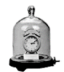
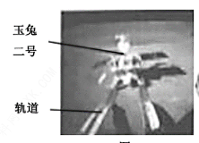
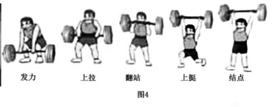
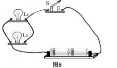

2019年北京市中考物理试题 · 选择题 第6、7、8、9、10题
6．（2分）如图所示，把正在响铃的闹钟放在玻璃罩内，逐渐抽出玻璃罩内的空气，听到闹铃声逐渐变小，直至听不见；再让空气逐渐进入玻璃罩内，听到闹铃声又逐渐变大。关于上述实验，下列说法中正确的是（ ）

A．空气可以传播声音
B．只要闹铃振动，就可以听到铃声
C．听不见闹铃声了，是由于闹铃不再振动
D．听到闹铃声又逐渐变大，是由于闹铃振动逐渐变剧烈了
7．（2分）2019年1月3日，“玉兔二号”从停稳在月球表面的“嫦娥四号”上沿轨道缓缓下行，到达月球表面，如图所示。关于“玉兔二号”下行的过程，下到说中正确的是（ ）

A．若以月球表面为参照物，“嫦娥四号”是运动的
B．若以月球表面为参照物，“玉兔二号“是静止的
C．若以轨道为参照物，“玉兔二号“是运动的
D．若以“嫦娥四号“为参照物，“玉兔二号”是静止的
8．（2分）如图为一名举重运动员做挺举连续动作时的几个状态图。下列说法中正确的是（ ）

A．从发力到上拉的过程中，运动员对杠铃不做功
B．从上拉到翻站的过程中，运动员对杠铃不做功
C．从翻站到上挺的过程中，运动员对杠铃不做功
D．举着杠铃稳定站立的过程中，运动员对杠铃不做功
9．（2分）古诗《立冬》中，有诗句“门尽冷霜能醒骨，窗临残照好读书”，诗中所说的“霜”，其形成过程的物态变化属于（ ）
A．凝华B．凝固C．汽化D．液化
10．（2分）如图所示的电路中，将开关S闭合，灯L1和灯L2均发光，下列说法中正确的是（ ）

A．灯L1和灯L2串联
B．灯L1和灯L2两端的电压一定相等
C．通过灯L1的电流与通过灯L2的电流一定相等
D．通过灯L1的电流与通过电源的电流一定相等